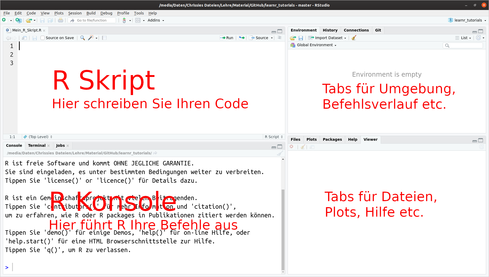

1 Erste Schritte in R
- Layout und Bedeutung einzelner Fenster in RStudio kennen
- R Notebooks kennen
- Wichtigkeit der Reproduzierbarkeit erklären
- Begriff literate programming definieren
- Aufbau einer RMarkdown-Datei erklären
1.1 Was ist ?
R ist eine Programmiersprache für Datenanalyse und statistische Modellierung. Es ist frei verfügbar (open source software) und neben Python einer der am meisten benutzten Programmiersprachen zur Datenanalyse und -visualisierung. R wurde von Ross Ihaka und Robert Gentleman 1996 veröffentlicht (Ihaka and Gentleman 1996). Es gibt für R eine Vielzahl von Zusatzpaketen, die die Funktionalität und die Einsatzmöglichkeiten enorm erweitern.
Sie können R für Ihren Computer auf der offiziellen R-Seite https://www.r-project.org/ herunterladen und installieren. Eine kurze Anleitung finden Sie auf ILIAS, zusammen mit der Liste der Pakete, die wir in diesm Kurs brachen werden. Zusätzlich können Sie sich hier ein Video zur Installation ansehen.
Auf der offiziellen R-Seite finden Sie auch zusätzliche Pakete, und zwar unter CRAN (The Comprehensive R Archive Network). Manche Pakete sind auf den CRAN-Seiten thematische in sogen. CRAN Task Views gegliedert. Für den Umweltbereich sind folgende Paketsammlungen besonders relevant:
- Environmetrics: Analyse von Umweltdaten
- Multivariate: Multivariate Statistik
- Spatial: Analyse von räumlichen Daten
- TimeSeries: Zeitreihenanalyse
Zu Beginn des Kurses werden wir jedoch nicht auf Ihren lokalen Rechnern arbeiten, sondern auf den bereits eingerichteten Uni-Rechnern in den EDV-Räumen. Daher biete ich zu diesem frühen Zeitpunkt im Kurs keine Unterstützung bei der Installation von R auf Ihren Privatrechnern. Für die ganz Ungeduldigen, gibt es hier eine kurze Einleitung zur Installation.
1.2 Was ist RStudio?
RStudio Desktop ist eine Entwicklungsumgebung für R. Wichtig: RStudio wird erst nach R installiert und macht ohne R keinen Sinn. Sie können die open source Version kostenlos für Ihren Rechner hier herunterladen, falls Sie sich entscheiden, (später) R auf Ihrem Rechner zu installieren. Es gibt eine live Einführung in RStudio im Kurs. Zusätzlich können Sie hier ein Video dazu ansehen.
Die Oberfläche von RStudio ist in vier Bereiche unterteilt (Abbildung 1.1).

Sie sollten auch auf Ihrem eigenen Rechner einen Ordner für die Veranstaltung anlegen und darin jeweils einen Ordner für Folien, Daten und Notebooks.
1.3 Reproduzierbare Berichte in R
1.3.1 Warum Reproduzierbarkeit in der Forschung wichtig ist
Als Motivation für dieses Thema empfehle ich das Video von Prof. Roger Peng der John Hopkins Bloogmerg School of Public Health.
1.3.2 Literate Programming Idee von Donald Knuth
Die Idee, dass man den Code und die dazugehörige Interpretation (Text, Bericht etc.) nicht voneinander trennen sollte, geht auf Knuth (1984) zurück. Mit Literate Programming meinte Knuth, dass Programme auch nichts anderes wie literarische Werke sind. Er setzte den Fokus darauf, mit Programmen menschlichen Benutzern zu erklären, was man den Computer machen lassen möchte. Also weg vom computer- hin zum mensch-zentrierten Zugang. So wird Programmieren und in unserem Fall die Datenanalyse verständlich und vor allem reproduzierbar.
Leider ist es in unserer modernen Forschungslandschaft immer noch nicht Standard. Das Trennen von Analyseergebnissen und Berichten (Forschungsartikeln) sorgt für viele (unentdeckte und unnötige) Fehler und Frust.
1.3.3 Reproduzierbare Berichte mit R Markdown
R hat sein eigenes System von reproduzierbaren Berichten, genannt R Markdown (Xie, Allaire, and Grolemund 2021). Es ist benutzerfreundlich und ermöglicht unterschiedliche Formate von Berichten, wie HTML-Dokumente, PDF-Dateien, Präsentationsfolien usw.
Es wird Sie vielleicht überraschen, aber das Skript, das Sie gerade lesen, ist nichts anderes als ein “literarisch” programmiertes Buch in R Bookdown (Xie, Allaire, and Grolemund 2021), einem R-Paket speziell für lange R Markdown-Dokumente.
Wir werden vor allem mit R Notebooks arbeiten, die eine gute Interaktion zwischen dem geschriebenen Text und dem R-Code ermöglichen. Das Notebook kann sowohl in ein HTML-Dokument als auch in PDF oder Word als endgültiges Dokument umgewandelt werden. Diesen Prozess nennt man knit.
1.3.4 Ein neues R Notebook erstellen
Um ein neues R Notebook zu erstellen, klicken Sie das kleine grüne Plus oben links und wählen Sie R Notebook aus. Sie können es erst einmal bei untitled belassen (Abbildung 1.2).

Wenn Sie ein neues Notebook erstellen, enthält das Template etwas Code. Lesen Sie sich das ruhig noch einmal durch, da es ein paar hilfreiche Tastenkürzel und Tipps. Danach können Sie den Text unterhalb des Headers löschen.
1.4 Der Header eines Notebooks
Ein R Notebook (und jedes andere R Markdown Dokument) besteht aus einem Header (Kopf) und dem eigentlichen Text und Code. Der Header hat dabei ein bestimmtes Layout, auf das Sie unbedingt achten müssen (Rechtschreibung!). Der Header ist immer zwischen drei Minuszeichen --- eingeschlossen. Bei komplizierteren Headern gibt es auch Einrückungen (mit der Tab-Taste), die auch Bedeutung haben (s. weiterführende Literatur). Wir bleiben bei einem einfachen Header ohne Einrückungen (Abbildung 1.3).
Um einen neuen R-Chunk hinzuzufügen, klicken Sie auf das kleine grüne C+ oben rechts oder verwenden Sie das Tastenkürzel Str+Alt+i.

Text kann einfach unterhalb des Headers und außerhalb der Chunks getippt werden. Die wichtigsten Layoutelemente für den Text finden Sie hier. R Markdown unterstützt mathematische Notation in Latex-Stil. Eine Einführung in Latex würde an dieser Stelle aber zu weit führen.
Das R Notebook hat den Vorteil, dass man über den Button Preview oben in der Leiste sofort die Ergebnisse anzeigen lassen kann. Sie müssen also nicht knitten. Falls Sie es doch möchten, klicken Sie auf das kleine Dreieck neben dem Preview und suchen Sie sich ein Output-Format aus. Ein einmal “geknittetes” Notebook ist kein Notebook mehr (kein Preview). Damit es wieder zum Nobebook wird, müssen Sie im Header output: html_notebbok einstellen (Abbildung 1.3).
1.4.1 Wichtigste Regeln für Reproduzierbarkeit
Ein weiteres Video von Prof. Peng widmet sich den wichtigsten Regeln für Reproduzierbarkeit.
1.5 Aufgaben
Wenn Sie bereits Erfahrung mit R haben, dann bearbeiten Sie direkt das Lab 01: Einführung in R in Kapitel 4. Falls R für Sie komplett neu ist, arbeiten Sie zuerst die Kapitel Kapitel 2 und Kapitel 3 durch und bearbeiten Sie dann das Lab 01: Einführung in R in Kapitel 4.
Bitte speichern Sie Ihre Arbeit regelmäßig ab!
1.6 Ihre Arbeit einreichen
- Speichern Sie Ihr Notebook ab.
- Laden Sie Ihre .Rmd Datei in ILIAS hoch. Beachten Sie die Frist!
- Sie erhalten die Musterlösung nach dem Hochladen.
1.7 Weiterführende Literatur
r4ds, Kapitel 4 und 27 (Wickham and Grolemund 2021)